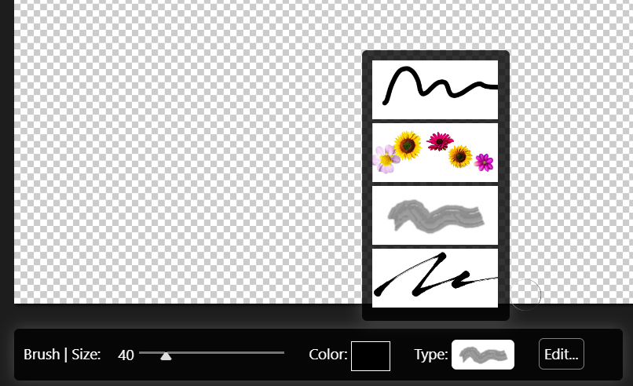

Gyre SDKDOCS
Brush Plugins
Brush Plugins in our AI image editing application are designed to extend the functionality of the Brush tool. Unlike layer plugins, these are not Web Components but are instead implemented as classes, each representing a different brush type. These classes provide specific drawing functions that allow for a variety of brush effects and behaviors.
Overview
Brush plugins are classes that implement essential drawing functions. These brushes will be available in the Brush selection of the Brush tool, enabling users to choose from a variety of brush types for their drawing needs.
Selecting a brush
Required Functions
Each custom brush class must implement the following functions:
1. start(context, point)
- Description: Initializes the brush stroke.
- Parameters:
context: The drawing context.point: The starting point of the brush stroke.
- Functionality: Set up the initial state of the brush stroke, such as initial position and any necessary setup for the drawing context.
2. continue(context, newPoint)
- Description: Continues the brush stroke from the last point to the new point.
- Parameters:
context: The drawing context.newPoint: The new point to continue the brush stroke.
- Functionality: Draw from the previous point to the new point, updating the drawing context as needed.
3. end()
- Description: Finalizes the brush stroke.
- Functionality: Perform any cleanup or finalization necessary after the brush stroke is complete.
4. refresh(globalValues)
- Description: This function will be called if brush size had been changed.
- Parameters:
globalValues: A pointer to globalThis.gyre.paletteValues object havingbrushSizevalue.
Example Custom Brush Class
Here is an example of a simple custom brush class implementing the required functions:
Manifest
The manifest is a JSON object stored in gyre_entry/gyre_ui_brushes.json in plugins array that describes the properties and settings of a brush tool used in an application. Below is a detailed description of each field in the manifest, along with an example for clarity.
Fields
type
- Description: Specifies the type of tool. Must be “brush”`.
- Type:
string
className
- Description: The class name of the brush following the structure as explained above.
- Type:
string - Example:
"brush_Caligraphy"
title
- Description: The display name of the brush.
- Type:
string - Example:
"Caligraphy Brush"
js_path
- Description: Path to the JS file with brush class. Paths are defined relative to the Manifest file.
- Type:
string - Example:
"node_modules/@fds-components-public/fds-brush-caligraphy/dist/brush_Caligraphy.js"
images
- Description: Contains paths to images associated with the brush. Paths are defined relative to the Manifest file.
- Type:
object- largeIcon
- Description: Path to the large icon image shown in the brush tool menu and when selecting a brush. This field is required.
- Type:
string - Example:
"node_modules/@fds-components-public/fds-brush-caligraphy/dist/brush_Caligraphy2.jpg"
- largeIcon
form
- Description: Defines the configurable parameters of the brush. Currently, only the slider type is supported.
- Type:
object- Parameter Name (e.g., spring, friction, splitNum, diff)
- Description: Name of the parameter.
- Type:
object- label
- Description: Display name of the parameter.
- Type:
string - Example:
"Spring"
- type
- Description: Type of the input control. Currently, only
slideris supported. - Type:
string - Example:
"slider"
- Description: Type of the input control. Currently, only
- from
- Description: Minimum value of the slider.
- Type:
number - Example:
1
- to
- Description: Maximum value of the slider.
- Type:
number - Example:
1000
- stepCount
- Description: Number of steps in the slider range.
- Type:
number - Example:
1
- default
- Description: Default value of the slider.
- Type:
number - Example:
500
- label
- Parameter Name (e.g., spring, friction, splitNum, diff)
Example Manifest
This manifest provides a structured way to define the properties and settings of a brush tool, including its type, title, associated images, and configurable parameters. The form parameters depend on the specific brush, with the slider type currently supported. The largeIcon image is required and used in the brush tool menu and selection process.
Caligraphy Brush from our plugin examples.